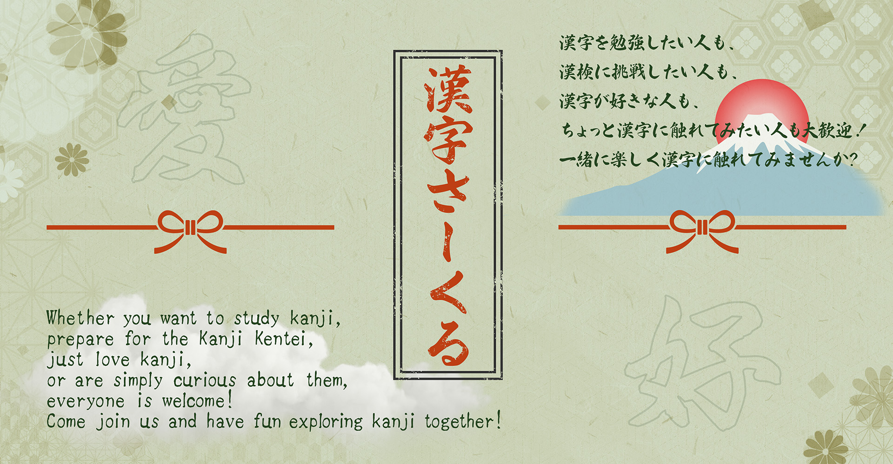

Vi pluggar kanji tillsammans. En del siktar på Kanji Kentei, andra vill bara sluta blanda ihop 未 och 末 eller öka sina ordförråd. Båda är rätt skäl att vara med!
Cirkeln är pepp mer än lektion, t.ex: veckovisa check-ins och delade resurser. Ungefär en gång i månaden håller vi ett mockprov som vi skriver tillsammans på vuxenskolan. Än så länge har vi har alla börjat på 10-kyu och jobbat oss uppåt men du är välkommen att hoppa in på vilken nivå du vill förstås!
Kanji Kentei
漢字検定 är ett japanskt kanjiprov i 12 nivåer, från 10-kyu upp till 1-kyu med pre-2 mellan 3-kyu och 2-kyu samt pre 1 mellan 2-kyu och 1-kyu. Vi tränar mot det på riktigt papper, inte bara anki. Mockproven är frivilliga, men de flesta tycker att klockan och tystnaden gör underverk för koncentrationen och vissa finner det motiverande att i lugn takt jobba sig upp steg för steg.
Nästa mockprov: Håll utkik i kanalen eller på Nyhetssidan
